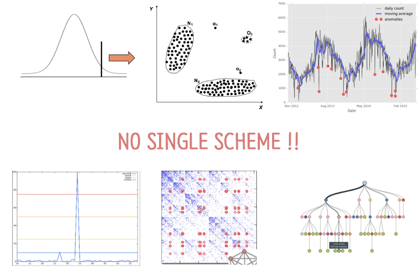
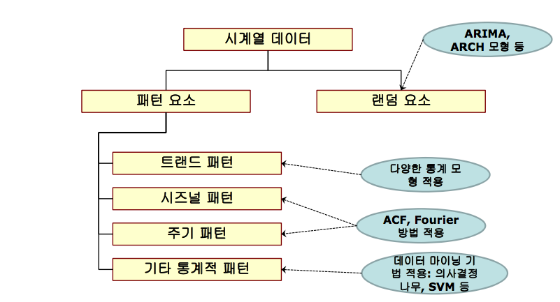
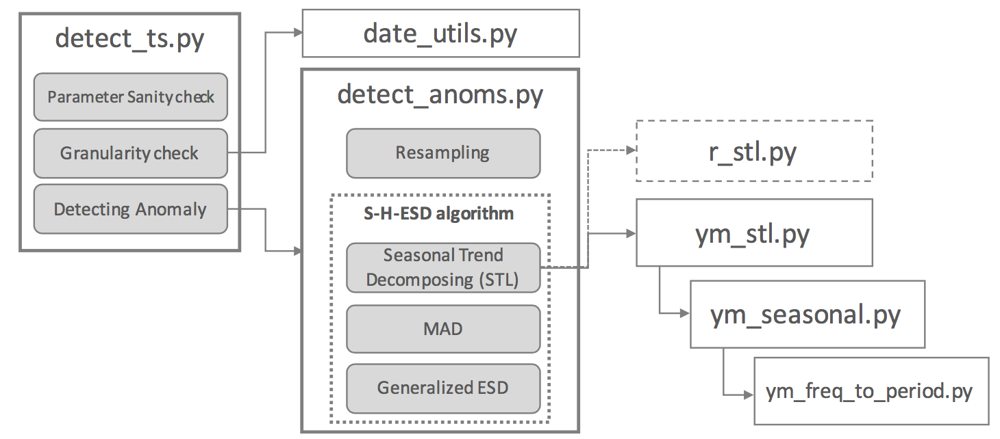
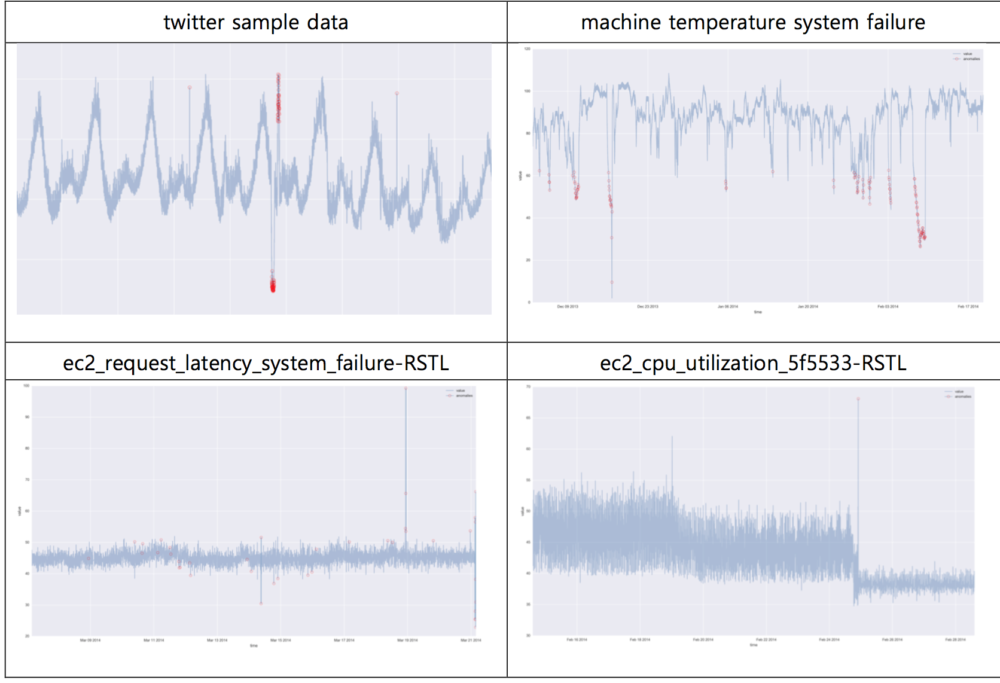
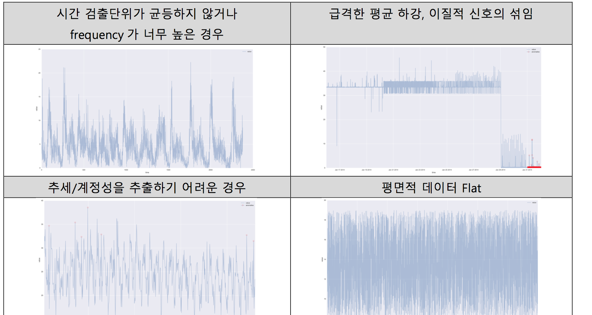

abstract
- 이상탐지의 기초적인 개념, 시계열 데이터의 기본적 이해, 이를 통한 시계열 이상탐지 방법 소개
- code/ipynb provided - STL decomposition
reference
- Statistical Learning Based Anomaly Detection @Twitter
- Anomaly Detection Twitter Github
- Twitter’s Blog on Anomaly Detection
Anomaly Definition:
기존 관측과는 상이하여 다른 매커니즘에 의해 생성되었다고 판단할만한 관측값. (An anomaly is an observation that deviates so much from other observations so as to arouse suspicious that it is was generated by different mechanism.)
Approaches on Anomaly Detection:
Anomaly Detection 은 그 자체가 알고리즘이라기 보다는 ‘목표하는바/기대하는 결과’에 해당하며, 여러 알고리즘과 분석론을 활용한 ‘분석 application’ 이라고 볼 수 있다. 따라서, 해결하고자 하는 문제의 목적과 컨텍스트에 따라 이상탐지 목적은 상이해 질 수 있다.
이상탐지의 문제 특징(Problem Characteristics) 파악 및 구체적 분석방법론 수립시 고려할 사항들은 아래와 같다.
(1) 목적(Objectives)
- 기회 탐지 Chance discovery (Positive anomaly)
- 오류 탐지 Fault Discovery (Negative Anomaly)
- 새로움의 탐지 Novelty Detection
- 노이즈 제거 Noise Removal
(2) 입력 데이터의 특성(Nature of input data)
- 시계열 Time-Series(sequential) vs Static
- 단변량/다변량 Univariate vs Multivariate
- 데이터 타입 Data Type (Binary /Categorical /Continuous /Hybrid)
- 상호의존적/독립적 Relational vs Independent
- (기존 룰의 적용이 가능할 만큼) 잘 알려진/알려져 있지 않은 Well-known or not (rule existing or not)
(3) 이상값의 종류(Type of anomaly)
이상값의 종류는 보는 시간에 따라 다를 수 있어 엄밀한 규정을 하긴 어렵다.
미네소타 대학의 Survey paper에는 아래와 같이 규정하고 있다. (source:
위의 분류를 최대한 간소화 시키면, 결국 축적된 시간동안 정적인 점분포에 초점을 맞추는 Point anomaly 와, 시계열적인 동적인 특성에 주안을 두는 Context anomaly로 구분 지을수 있다.
| 분류 | 특징 |
|---|---|
| Point anomaly | Statistics(Gaussian distribution) , Clustering, Classification |
| Contextual anomaly | Statistics(Gaussian Process Regression, S-H-ESD …) |
앞서 밝혔듯, 이는 굉장히 단순화 시킨 구분이고, 결국 이상탐지를 위해선 ‘정상 상태’를 규정해야하고, 이는 당면한 과제, 도메인 특성에 따라 상이하게 달라진다. 아래는 다양한 방법으로 이상탐지가 분석 될 수 있음을 내포한다.

Contextual Anomaly 분석 방법의 이해
A. 시계열 데이터 이해
본 글에서 소개하는 이상탐지 기법(S-H-ESD)의 이해를 위해서는 시계열 패턴 요소의 선행적 이해가 요구된다.

- 추세(Trend): 장기적으로 나타나는 변동 패턴
- 계절성(Seasonal): 주,월,분기,반기 단위 등 이미 알려진 시간의 주기로 나타나는 패턴
- 주기(Cyclic): 최소 2 년 단위로 나타나는 고정된 기간이 아닌 장기적인 변동
- 랜덤요소/잔차 (Random/Residual/Remainder): 그 이외의 성분
B. S-H-ESD 기법의 이해
SNS 서비스인 트위터는 기존의 통계적 방법들을 조합하여 시계열의 이상값을 탐지하는 방법을 제안한다. (S-H-ESD) 간략히 요약하면, 아래와 같이 기존 방법의 문제에 대응하는 새로운 방법을 제안한다.
| 기존 이상탐지 방법의 한계 |
|---|
| 1. 잘못된 계산 지표 (Using Wrong Metric): 기존의 단순 평균$\mu$, 표준편차$\sigma$를 이용하는 방식 자체가 outlier를 포괄하여 계산하므로 이상값에 취약 |
| 2. Multi-modality에 취약: 평규과 표준편차가 seasonality, trend 등에 의해 변화되어 outlier를 놓치게 되는 경우가 발생 |
| S-H-ESD 기법의 이상탐지 방법 |
|---|
| 1. Use Robust Statistics/Metric: a. Median Absolute Deviation(MAD) b. Grubb’s Test& Generalized Extreme Studentized Deviate (ESD) |
| 2. Remove impact of seasonality and trend (Multi-modality aware): a. Seasonal Trend decomposition using Loess(STL) |
위 표에서 밝힌 S-H-ESD 기법을 좀더 자세히 이해하려면, 다음과 같은 통계학적 개념들의 이해가 요구된다.
- Median Absolute Deviation(MAD)
- Student t-distribution
- Extreme Studentized Deviate (ESD) test
- Generalized ESD
- Seasonal Trend decomposition using Loess(STL)
Median Absolute Deviation(MAD) - 중위수(중앙값) 절대 편차 :
중위수 절대 편차는 표본그룹의 중앙값( $𝑋$ )과 각 표본( $ \bar { X } $ )의 차이값의 절대값을 취해서 중앙값을 추출하는 방법. 양적 자료의 퍼짐을 알고 싶을 때, 표본분산과 표준편차 보다 이상치에 덜 영향을 받는 강건성 robustness 있는 분산 측정 방법.
Student t-distribution:
t-분포는 정규분포 에서 개의 표본들을 확률변수로 정의 한 확률 분포이다. 이 확률 분포 또한 정규분포이며, 이를 수식으로 나타내면 아래와 같다.
Grubb’s test(=ESD test)
단일 이상치를 테스트 하는데 ESD test 방법은 널리 알려진 기법이다. ESD 검증 방법의 상세한 설명은 본 보고서에서 생략하며, 주요 수식표현은 아래와 같다. - 참고:wiki
ESD 검정은 아래와 같은 귀무가설/대립가설을 통해 검정한다.
아래 정의와 같은 G 값을 통해 outlier 인지 판별한다.
최대값과 최소값을 둘 다 검정하는 two-sided test 에서, 이상치가 없다는 귀무가설은 significance level( $\alpha$ ) 가 아래를 만족할시 기각된다.
ESD 테스트는 정상성 (normality) 를 가정하고, 단일 이상치를 탐지하는데 적합하다는 한계 때문에, 시계열과 같은 연속적 데이터에서 지속적으로 이상탐지를 해야하는 경우, 아래와 같은 Generalized ESD 의 사용이 권장된다.
Generalized Extreme Studentized Deviate (Generalized ESD):
Generalized ESD 는 Grubb’s test와 달리 여러개의 outlier를 가정한 검정방법임. 가장 높은 G 밸류를 제거해 나가면서 지속적으로 순회하여 평균과 표준편차를 업데이트해나가는 방식.
위에 명시된 Critical Value($\lambda_{i}$) 또한 지속적으로 업데이트 되며, $R_{i} > \lambda_{i} $를 만족하는 $i$ 가 이상값의 개수를 결정하게됨. 본 검정방법은 앞선 Grubb’s test 보다 여러개의 outlier를 검출 할 수 있다는 장점이 있으나, 여전히 정규성을 가정하고 있으므로, 정규성 테스트 선행이 되어야 하고, 계절성(seasonality)을 고려하지 않는 단점이 있다.
Seasonal Trend decomposition using Loess(STL):
STL은 시계열 데이터에서 계절성, 추세, 잔차 세가지 패턴요소로 분해하는 기법으로 (본문 전반부 참조), seasonality와 trend를 제거하면, 이상탐지에 적합한 residual만 남게 된다.
(github code)
Python 을 이용한 S-H-ESD 알고리즘 구현
앞서 소개하였듯이, 이상탐지를 위한 S-H-ESD 알고리즘은 Twitter 사가 처음 제안하였으며, 이를 실제 구현한 R 코드 또한 Twitter 공식 깃헙(Github) 페이지에 오픈소스로 공개되어 있다. (GNU Public License) (링크 본 포스팅에서는 이를 좀더 시스템 친화적인 프로그래밍 언어인 Python 으로 변환 구현해 Times Series상에서 이상값 검출 유즈케이스를 소개한다.
Python 으로 S-H-ESD 기반의 Anomaly Detection 기능을 변환(porting)한 오픈 소스 패키지 또한 존재하므로, ( pyculiarity / github ) 본 사례연구/구현에서는 해당 패키지를 기반으로 구현되어 있다. 다만 해당 패키지에서는 순수 Python 라이브러리 외에 R 의 인스톨을 요구하는 rpy2 라는 다소 불편하고 시스템 이식성이 떨어지는 라이브러리를 중심적으로 활용한다. 이에 본 사례적용 케이스에서는 Python 친화적이고 기계학습/통계에서 major 한 패키지(statsmodel) 를 활용하여 성능을 좀더 업그레이드 하였다. 아래는 패키지 구성과 기능 상세와 구현 방법에 대한 설명이다.

“detect_ts.py” 는 anomaly detection 분석의 최상위 모듈로, 후에 resampling을 위해 시계열 데이터 granularity check을 (분/시간/일/월) 하고 기타 여러 옵션기능들에 대한 파라미터 값들의 에러핸들링(parameter sanity check)을 기본적으로 수행한다. 그리고 “detect_anoms.py”를 호출해 이상검출을 실시한다. 실제로 이상탐지에 가장 중요한 기능들은 이 “detect_anoms.py”에서 수행되는데, 다양한 주기/단위 ( e.g. 30초, 1분, 3분,1일 )로 수집된 시계열 데이터를 모두 수용할 수 있기 위해 데이터 시계열 단위를 지정하여 새로 변환하는 resampling 기능을 우선적으로 수행한다. 그리고 S-H-ESD 알고리즘의 핵심적 세가지 기능을 수행하는데, 첫째로 시계열 데이터의 multi- modality로 인한 오차를 줄이기 위해 seasonal, trend, residual로 분해한다. 이 분해된 decomposed data에서 residual을 추출하여 이 데이터의 MAD 값을 얻어낸 후, Generalized ESD를 통해 이상치를 검출한다. (STL, MAD, Generalized ESD의 이론적 이해는 본문 윗절 참조.)
STL를 통해 decomposing을 하는 방법에서, 앞서 언급하였듯이 기존 Twitter를 그대로 Porting한 pyculiarity 패키지에서는 R함수를 Python을 위해 포팅 해주는 rpy2라는 외부 패키지를 활용해 구현하였다. 하지만 rpy2는 R의 설치를 요구하고 R이 실행된 상태를 가정하기 때문에, 추가적인 종속성과 시스템 자원을 요구한다. 때문에 시스템 호환성/이식성/ 성능 등에 영향을 필연적으로 미치게 되어있다. 이러한 문제 때문에, 본 프로젝트 및 사례연구를 위해서 rpy2의 패키지를 대체하는 라이브러리를 statsmodel을 기반으로 새로 작성하였다.(ym_stl.py, ym_seasonal.py, ym_freq_to_period.py)
Anomaly Detection 기능을 이용하기 위해서는 detect_ts.py를 호출하는 스크립트를 실행하면 된다. 아래는 detect_ts.py를 호출하여 anomaly를 검출하는 스크립트 예시이다. 단순히 anomaly를 검출하는데 벗어나, 검출값들을 시각화 하고자 하면, 본 절 젤 상위 예시코드 참조.
```python from pyculiarity import detect_ts import pandas as pd n_file = ‘filename’ timeS_DF = pd.read_csv(‘./data/%s.csv’% n_file, usecols = [‘col1(time)’, ‘col2(value)’]) results = detect_ts(timeS_DF, max_anoms=0.02, direction=’pos’, only_last=None)
print ‘»> the number of anomaly: ‘, len(results[‘anoms’]) print results[‘anoms’] ```
아래는 MAD와 generalized ESD으로 S-H-ESD 기능을 구현한 부분이다.
```python
for i in range(1, max_outliers + 1):
if one_tail:
if upper_tail:
ares = data.value - data.value.median()
else:
ares = data.value.median() - data.value
else:
ares = (data.value - data.value.median()).abs()
data_sigma = mad(data.value)
if data_sigma == 0:
break
ares = ares/float(data_sigma)
R = ares.max()
temp_max_idx = ares[ares == R].index.tolist()[0]
R_idx[i - 1] = temp_max_idx
data = data[data.index != R_idx[i - 1]]
if one_tail:
p = 1 - alpha / float(n - i + 1)
else:
p = 1 - alpha / float(2 * (n - i + 1))
t = student_t.ppf(p, (n - i - 1))
lam = t * (n - i) / float(sqrt((n - i - 1 + t**2) * (n - i + 1)))
if R > lam: num_anoms = i ``` 성능평가 및 검증
현재 Twitter 사에서 개방한 R 기반 S-H-ESD 패키지에 대해서 성능평가는 다수 진행되었고, 대체로 공개 솔루션 중 가장 좋은 평가를 받는다. Twitter 의 Anomaly Detection 은 우선 아래와 같은 주요 특징적 기능들이 있다.(파라미터이기도 함)
| Key Features |
|---|
| - 이상치의 방향 (direction = positive/negative ) - 전역적&지역적 이상치 (global/local anomaly) - 최근 하루/한시간(last day/hour) - 기대값(expected value) 장기적 추세에 따른 이상탐지(long term) |
아래는 twitter 사의 이상탐지 패키지의 성능 벤치마크를 진행한 내용에 대한 링크이다. - Anomali.io: https://anomaly.io/anomaly-detection-twitter-r/ - NUMENTA: Evaluating Real-time Anomaly Detection Algorithms – the Numenta Anomaly Benchmark (논문)
위 벤치마크에 따르면, 이상치를 잘 탐지하거나 그렇지 못한 경우는 아래와 같다.
| Detected | Not Detected |
|---|---|
| - 노이즈의 증가 (More noise) - 급작스런 상승, 급등점 (Sudden grow; spike) - 하강(Break down) - 보이지 않던 희귀 값 (Activity when usually none) |
- 점진적 증가 신호(seasonal grow) - 평면적 신호 (Flat signal) - 점진적 증가하는 신호에서의 음의방향 이상치 (Negative seasonal anomaly) |
아래는 NUMENTA에서 제공한 데이타 셋을 통해 잘 동작하는 경우의 예시이다.

그러나 위 벤치마킹 연구에서 알려진 사실과 같이, 아래는 잘 동작하지 않았던 경우에 대한 예임.

References
-
Varun Chandola, 2009,
, ACM Computing Survey 09 2009 p1-72 -
Arindam Banerjee,
, United Technology Research Center -
이기천 한양대 교수, 2013, <시계열 데이터의="" 통계적="" 분석방법="">, 강의자료
-
C. E. Rasmussen & C. K. I. Williams, Gaussian Processes for Machine Learning, the MIT Press, 2006
- Problem of the Month: Anomaly Detection
- Arun Kejariwal, Statistical Learning Based Anomaly Detection @ Twitter, Nov 2014